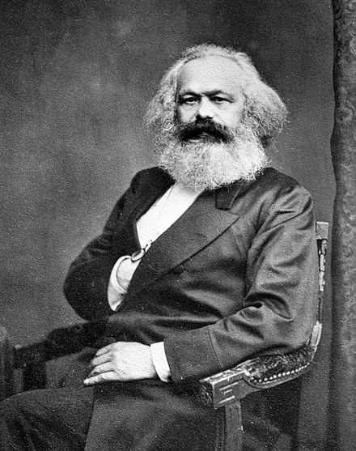
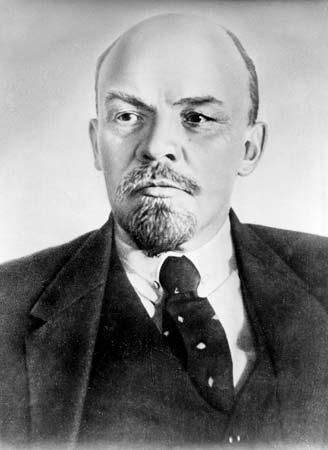
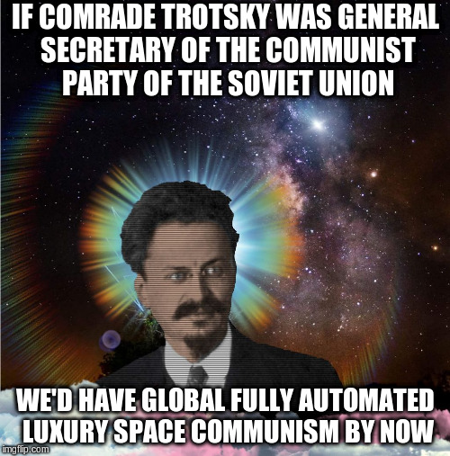

<!doctype html>
<html lang="en">
    <head>
        <meta charset="utf-8">
        <meta name="viewport" content="width=device-width, initial-scale=1.0, maximum-scale=1.0, user-scalable=no">

        <title>On The Affordances of Bourgeois Democracy</title>
        <link rel="stylesheet" href="./css/reveal.css">
        <link rel="stylesheet" href="./css/theme/black.css" id="theme">
        <link rel="stylesheet" href="./css/highlight/zenburn.css">
        <link rel="stylesheet" href="./css/print/paper.css" type="text/css" media="print">
          <link rel="stylesheet" href="./_assets/myleague.css">


    </head>
    <body>

        <div class="reveal">
            <div class="slides"><section  data-markdown><script type="text/template"># On The Affordances of Bourgeois Democracy
#### What can be accomplished by way of parliamentary parties?
#### How do we work towards revolutionary goals?
#### What Would Lenin Do?
</script></section><section  data-markdown><script type="text/template">
# A New International?
### What Kind of International?
 - The 1st International was **a Drinking Club**
 - The 2nd International was **a Bunch of Parties**
 - The 3rd International was **a Bunch of Countries**
 - The 4th International was **Fan Fiction**
</script></section><section  data-markdown><script type="text/template">
### The 1st International started as a Drinking Club
## Consisting of German Tailors, Mostly

"The tailors formed the central force of the League. German tailors were
everywhere: in Switzerland, in London, in Paris."
<br>-- Engels, On The History of the Communist League, 1885

#### Mainly Petty Bourgeois, Mystical, and Conspiratorial Tailors.

"I do not believe there was a single man in the whole League at that time who
had ever read a book on political economy."
<br>-- Engels, Ibid.
</script></section><section  data-markdown><script type="text/template">
# Utter Madcaps & Scattered Sectarians
### Marx and Engels were marginal figures at first

Engels described the views held by Marx and himself as<br>***"the Hallucinations of utter madcaps"*** and the<br>***"secret doctrine of a few scatter sectarians"***
</script></section><section  data-markdown><script type="text/template">
# The Communist League

#### Marx established leadership following the February Revolution in France, 1848

Whatever remained of the old mystical names dating back to the conspiratorial
period was now abolished; the League now consisted of communities, circles,
leading circles, a Central Committee and a Congress, and henceforth called
itself<br>the "Communist League" 

*Engels, Ibid*.
</script></section><section  data-markdown><script type="text/template">
#### First Article of the Communist League
## "The abolition of the old, bourgeois society based on class antagonisms and the foundation of a new society without classes and without private property."

"All contradiction and doubt were finally
set at rest, the new basic principles were
unanimously adopted, and Marx and I were
commissioned to draw up the Manifesto." -- Engels, Ibid.
</script></section><section  data-markdown><script type="text/template">
# Assorted Radicals

When The International Workingmen's Association was formed in 1864, Marx was "a relatively obscure refugee journalist" 

"The meeting was jammed with a large number of assorted radicals. There were
English Owenties and Chartists, French Proudhonists and Blanquists, Irish
nationalists, Polish patriots, Italian Mazzinists, and German Socialists. **It
was an assortment united not by a commonly shared ideology or even by genuine
internationalism**"

-- Saul Padover, as cited in Encyclopedia of Marxism
</script></section><section  data-markdown><script type="text/template">
## "In the International, Marx saw a great historic opportunity, and seized it."

"Indeed, **it is questionable whether the organization would have survived, or
would have had any meaning, without him**. His steely will and impassioned
commitment to the idea of the revolutionary role of the world proletariat
prevented the International from passing into the same oblivion as had other
dreams of squabbly radicals, confused in their philosophy and at cross-purposes
in their aims."

-- Saul Padover, Ibid.
</script></section><section  data-markdown><script type="text/template">
# Karl Marx, 1818 - 1883

</script></section><section  data-markdown><script type="text/template">
### The Second International

## From this club of squabbly radicals, Political Parties emerged.

# The squabbles, however, didn't stop.
</script></section><section  data-markdown><script type="text/template">
# Lenin
### Vladimir Ilyich Ulyanov, 1870 - 1924


</script></section><section  data-markdown><script type="text/template">
# Opportunist!
## Revisionist!
# Chauvinist!
## Renegade!

-- Lenin, every day.
</script></section><section  data-markdown><script type="text/template">
# The Dream of the 2nd International was the Communist Revolution
## (Except for the Opportunists)
</script></section><section  data-markdown><script type="text/template">
# What is opportunism?

"They now want the party to find the present legal order in Germany adequate for putting through all party demands by peaceful means" -- A Critique of the Erfurt Program, Frederick Engels, 1891

#### Opportunism is the belief that Socialism can be accomplished by parliamentary means, by way of bourgeois democracy, without revolution.
</script></section><section  data-markdown><script type="text/template">
#### This is **Revisionism** because that is not what Marx and Engels said.
## The violent overthrow of the bourgeoisie lays the foundation for the sway of the proletariat
 -- The Communist Manifesto
</script></section><section  data-markdown><script type="text/template">
#### The Revolution was supposed to happen in Europe, centred in Germany, not Russia

"Russia is a peasant country, one of the most backward<br>of European countries.
Socialism cannot triumph there<br>*directly and immediately*."

"The German proletariat is the most trustworthy, the most reliable ally of the
Russian and the world proletarian revolution."

"Long live the proletarian revolution that is beginning in Europe!"
  
-- Lenin, Farewell Letter to the Swiss Workers, 1917
</script></section><section  data-markdown><script type="text/template">
### Unshakable Faith In The European Revolution

"That the socialist revolution in Europe must come, and will come, is beyond doubt. All our hopes for the final victory of socialism are founded on this certainty and on this<br>scientific prognosis." -- Lenin, Jan 7, 1918

Lenin and his comrades had "unshakable faith in the European revolution of the proletariat as the sole way out and the inevitable consequence of the world war" -- Rosa Luxemburg,<br>The Russian Tragedy, September 1918

"There is only one solution to the tragedy in which Russia in caught up: an uprising at the rear of German imperialism,<br>the German mass rising, which can signal the<br>international revolution" -- Rosa Luxemburg, Ibid.
</script></section><section  data-markdown><script type="text/template">
# Lenin did not set out to create the USSR
### He set out to off kick of the European revolution
## The USSR was the spurious offspring of the failed European Revolution
### An Unexpected Child
</script></section><section  data-markdown><script type="text/template">
#### Why Did the 2nd International fail?
# Opportunism!
## Revisionism!
### Chauvinism!
## The Opportunists betrayed the revolutionaries to gain power in the bourgeois state
</script></section><section  data-markdown><script type="text/template">
# The 3rd International
#### Founded by the USSR, was the unexpected child of the failed 2nd International
### Forced To Developed a new concept of a socialist state
## Based in underdeveloped countries,<br>not the industrial core
</script></section><section  data-markdown><script type="text/template">
# Squaring The Circle

"To carry out the dictatorship of the proletariat and a socialist revolution in a single country surrounded by reactionary imperialist rule and in the fury of the bloodiest world war in human history – that is squaring the circle. Any socialist party would have to fail in this task and perish"

-- Rosa Luxemburg, Ibid.

### Not to mention that this single country was also underdeveloped and not ready for socialism.
#### And also counter-revolution and civil war.
</script></section><section  data-markdown><script type="text/template">
# Communism is Soviet power plus the electrification of the whole country
</script></section><section  data-markdown><script type="text/template">
#### The idea of a socialist state for the 2nd International, was an advanced, abundant industrial society, captured by its workers and managed for the benefit of all until the state withers away.

### The Socialist states of the 3rd International needed to transform themselves from underdeveloped countries into industrial countries, under hostile conditions within global capitalism. That was never the plan.

# Yet, they did it.
#### and supported anti-colonial, anti-imperialist, and socialist struggles around the globe
</script></section><section  data-markdown><script type="text/template">
# Soviet Union, 1922 - 1991


</script></section><section  data-markdown><script type="text/template">
## The 4th International
##### Fan Fiction


</script></section><section  data-markdown><script type="text/template">
#### Anti-Communist Myths
## Myth: The Bolsheviks wanted to create an authoritarian state
#### Reality: The Bolsheviks set out to the kick off the European revolution, which failed. Authoritarian measures were the only means remaining to industrialize their society
## Myth: The Bolshevik version of the Socialist State wasn't Socialist
#### Reality: The USSR was a different kind of socialist state than the kind that was envisioned by the failed 2nd international and had different challenges
</script></section><section  data-markdown><script type="text/template">
# So Now What?
</script></section><section  data-markdown><script type="text/template">
### When will the revolution be?
### What do we do in the mean time?

A revolution is justified by ***the possibility of its implementation***. "Anyone who
makes a revolution in a non-revolutionary situation is an idiot," says Marx. (I
quote, out of laziness and unfortunately, too often, from memory, but he said
it). The task posed by a non-revolutionary situation is not to carry out the
revolution but to create its preconditions by ***organizing, spreading class
consciousness, and seeking out allies***.

-- Peter Hacks, via Franziska
</script></section><section  data-markdown><script type="text/template">
### Ok, so how do we identify a revolutionary situation?

"For revolution it is essential, first, that a majority of the workers […] should fully understand that revolution is necessary [...] secondly that the ruling classes be in a state of governmental crisis which draws even the most backward masses into politics"

-- Lenin, as cited by Christopher Hill, 1946
</script></section><section  data-markdown><script type="text/template">
## What is the point of a party?

If the belief that socialism can be accomplished by way of the bourgeois state is ***opportunism***, and our only task in non-revolutionary situations is to ***organize, spread consciousness and find allies***, what do we need a party for?
</script></section><section  data-markdown><script type="text/template">
## Light and Air of Political Freedom

Lenin, when he was a loyal, if squabbly, member of the 2nd international,
worked towards establishing political freedom in Russia, such that a socialist
party would even be legal.

Working within the "present legal order," though not revolutionary in and of
itself, was needed. If the party is illegal, that makes it difficult to
organize, spread consciousness,<br>and find allies.
</script></section><section  data-markdown><script type="text/template">
### Making things better for Workers is not opportunism

Working within the present legal system to make workers better able to organize is not opportunism.

Believing that socialism can be accomplished by way of the bourgeois state is opportunism.

## Besides political freedom, workers need food, housing, health care, education,<br>child care, etc.
#### Fighting for these things is not opportunism either
</script></section><section  data-markdown><script type="text/template">
# The Affordances of Bourgeois Democracy

Given that the conditions for industrial capitalism were created under authoritarian rule, why does the bourgeois state even allow us to vote?

### In order to negotiate the transfer of labour power
</script></section><section  data-markdown><script type="text/template">
## Party Goals
Goals that can be accomplished **by way of the bourgeois democracy** are those that benefit the workers, while they **continue to sell their labour power to capitalists.**
## Revolutionary Goals
All other goals, including the abolition of capitalism and property and the end of imperialism, are revolutionary goals, only achievable after the bourgeois state has been abolished.
</script></section><section  data-markdown><script type="text/template">
## Party
The Party should seek to create the best possible conditions for the
workers to organize towards revolutiony goals.

**Revolutionary goals** can only be accomplished after the bourgeois state has
been abolished, and replaced by the workers state.

The Party should explicitly not pursue revolutionary goals itself, this will lead to opportunism.
</script></section><section  data-markdown><script type="text/template">
## Soviets and Communes

The workers should organize towards revolution, by building workers
institutions in the present, in the form of Soviets and Communes, as well as
spreading class consciousness and<br>finding allies.


The only way for workers to be successful when the revolutionary moment occurs,
is not only to have the mass of the workers believe that the revolution is
necessary, but to have the workers institutions in place to carry on providing
for societies needs after the bourgeois state has been abolished.
</script></section><section  data-markdown><script type="text/template">
fin.
</script></section></div>
        </div>

        <script src="./lib/js/head.min.js"></script>
        <script src="./js/reveal.js"></script>

        <script>
            function extend() {
              var target = {};
              for (var i = 0; i < arguments.length; i++) {
                var source = arguments[i];
                for (var key in source) {
                  if (source.hasOwnProperty(key)) {
                    target[key] = source[key];
                  }
                }
              }
              return target;
            }

            // Optional libraries used to extend on reveal.js
            var deps = [
              { src: './lib/js/classList.js', condition: function() { return !document.body.classList; } },
              { src: './plugin/markdown/marked.js', condition: function() { return !!document.querySelector('[data-markdown]'); } },
              { src: './plugin/markdown/markdown.js', condition: function() { return !!document.querySelector('[data-markdown]'); } },
              { src: './plugin/highlight/highlight.js', async: true, callback: function() { hljs.initHighlightingOnLoad(); } },
              { src: './plugin/zoom-js/zoom.js', async: true },
              { src: './plugin/notes/notes.js', async: true },
              { src: './plugin/math/math.js', async: true }
            ];

            // default options to init reveal.js
            var defaultOptions = {
              controls: true,
              progress: true,
              history: true,
              center: true,
              transition: 'default', // none/fade/slide/convex/concave/zoom
              dependencies: deps
            };

            // options from URL query string
            var queryOptions = Reveal.getQueryHash() || {};

            var options = {};
            options = extend(defaultOptions, options, queryOptions);
        </script>


        <script>
            Reveal.initialize(options);
        </script>
    </body>
</html>
